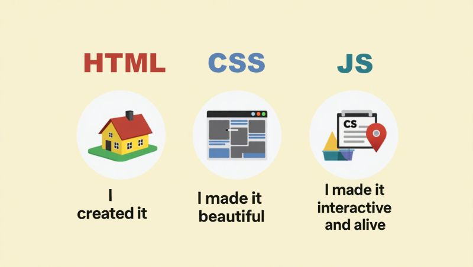
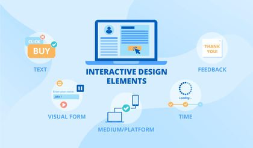
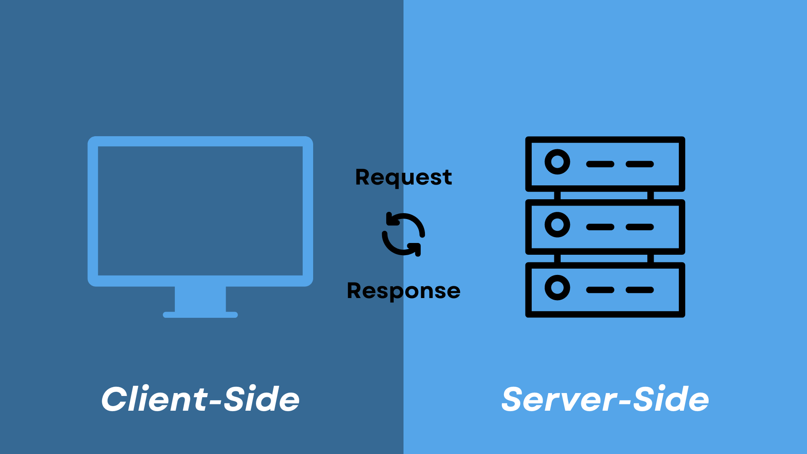
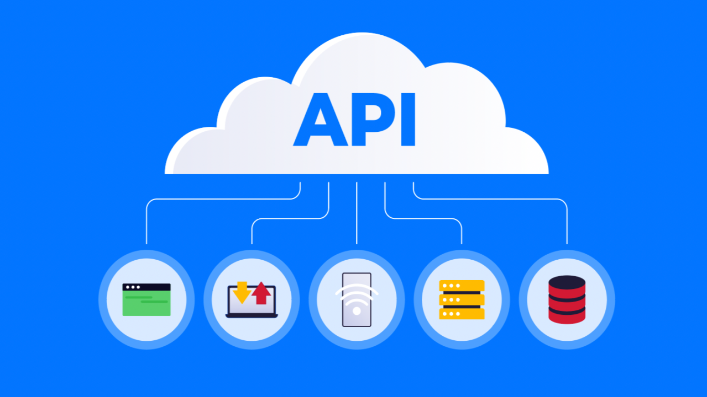

This module introduce concepts behind building modern websites and web applications. Students learn how websites work, how code is written and how different technologies combine to create interactive online experience.
A website is collection of web pages delivered from a server to a users browser. When you type a URL, the browser request pages from server and displays it using code.
There is a three core technologies in website

These two components make up the core of any modern web application, each serving a unique purpose.
Frontend is what users see and interact with on a website, like the layout, buttons and text.The front end is the part of a website or app users directly interact with. It includes the layout, design and interactive elements, creating a smooth and user friendly experience. It’s called the client side because it runs in the users browser.
Frontend development focuses on designing the look of a website, including layout, colors and interactive elements.
Ensures that websites work well on different devices and screen sizes, providing a best experience on desktops, tablets and smartphones.

It implements interactive features like buttons, forms, animations and dynamic content for users.
Ensures that website functions correctly in different web browsers like Chrome, Firefox and Safari.
Frontend development use technologies to create user interface (UI) and user experience (UX). Some of the most common frontend technologies included ↓
HTML (Hypertext Markup Language) :
The standard language for creating the structure of web pages. It defines elements like headings, paragraphs, links and images.
CSS (Cascading Style Sheets) :
Used for styling HTML elements. CSS controls the layout, colors, fonts and responsiveness of a webpage.
JavaScript :
A programming language that adds interactivity to the web. JavaScript is used to create dynamic content, such as forms, animations and interactive maps.
Frontend Frameworks : React, Angular, Tailwind, Bootstrap and Vue.js.
Frontend Libraries : jQuery and SASS.
The backend is the server side of web development. It handle data, manages storage and retrieval and ensures the frontend gets the information it needs. While users interact with the frontend, the backend works behind the scenes to manage business logic and data operations.

Backend development handle the server side operations, including processing data, managing application logic and handling user requests.
Manages and interacts with databases (e.g. MySQL, PostgreSQL, MongoDB) to store, retrieve and update data based on user interactions.

Create and manage APIs (Application Programming Interfaces) to allow communication between the frontend and backend
Ensures the security of data by implementing authorization, encryption and protection against attacks like SQL injection.
Backend development use different technologies to handle the server side logic and data management. Some of the most popular backend technologies include ↓
Programming Languages :
Common languages for backend development include PHP, Python, Ruby, Node.js, Java and C#.
Databases :
Backend systems interact with databases to store and retrieve data. Popular databases include MySQL, PostgreSQL, MongoDB and SQLite.
Web Servers :
Web servers like Apache, Nginx and IIS are used to handle HTTP requests and deliver content to users.
Backend Frameworks : Django (Python), Ruby on Rails (Ruby), Express.js (Node.js) and Spring Boot (Java).
Backend Libraries : Mongoose, Socket.io, JDBC, Pandas.
Here is a code for simple welcome webpage interface including HTML, CSS and java
Download the three files giving you and try it your self
For code a website we need a tags. These are the commonly use HTML tags
You can download it using this link Download
After coding part we can style our website using css & these are the common CSS codes
You can download it using this link Download